WCIA 2026 · SBSeg 2026
Certificados de apresentação
15 trabalhos apresentados no I WCIA
Cada certificado registra a apresentação de um trabalho no I Workshop de Cibersegurança em IA, realizado em 1º de setembro de 2026, durante o XXVI SBSeg, em Armação dos Búzios, RJ. Clique na miniatura para ver o certificado em tamanho real ou use o botão para baixar o PDF. A lista está ordenada pelo título do trabalho.
Esta página não aparece no menu do site: guarde o endereço ou compartilhe o link com quem apresentou.
-
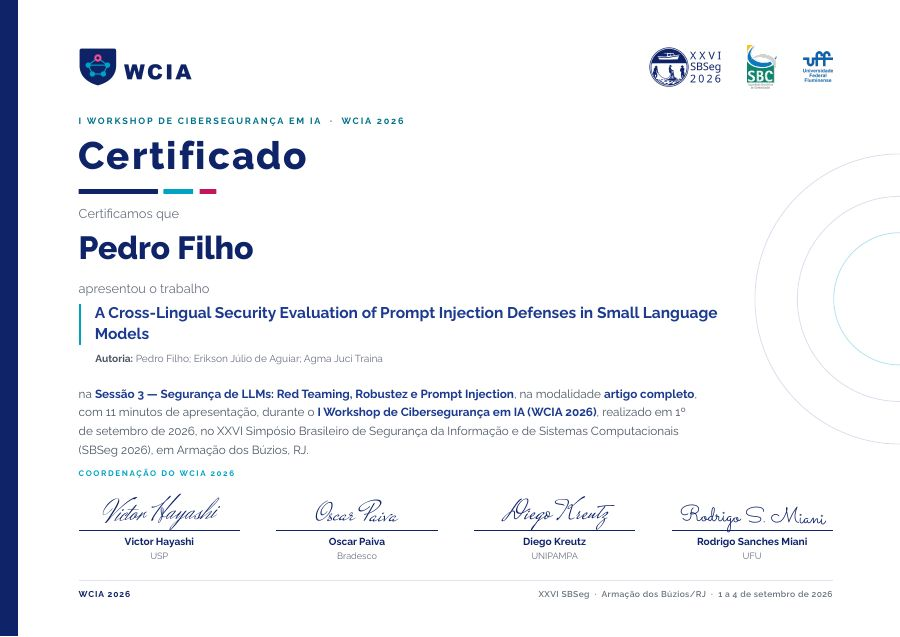
A Cross-Lingual Security Evaluation of Prompt Injection Defenses in Small Language Models
Pedro Filho
-
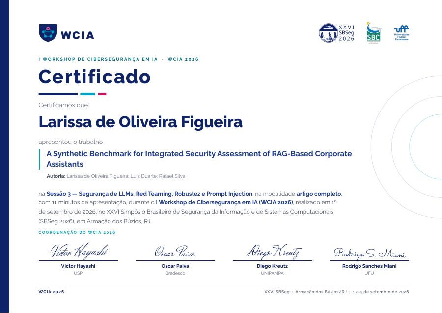
A Synthetic Benchmark for Integrated Security Assessment of RAG-Based Corporate Assistants
Larissa de Oliveira Figueira
-
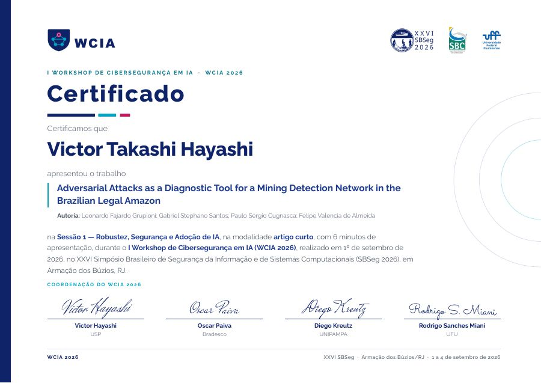
Adversarial Attacks as a Diagnostic Tool for a Mining Detection Network in the Brazilian Legal Amazon
Victor Takashi Hayashi
-
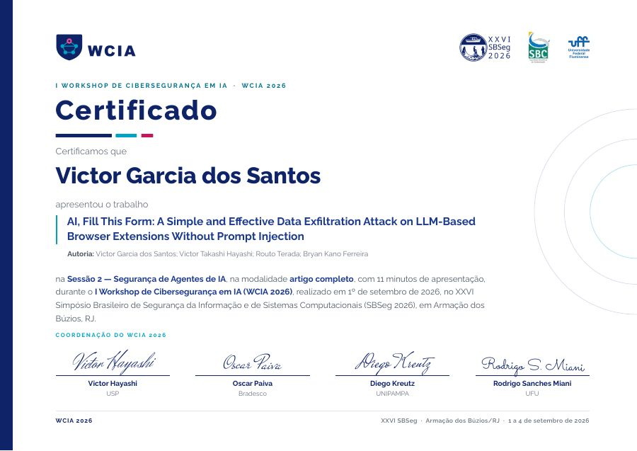
AI, Fill This Form: A Simple and Effective Data Exfiltration Attack on LLM-Based Browser Extensions Without Prompt Injection
Victor Garcia dos Santos
-
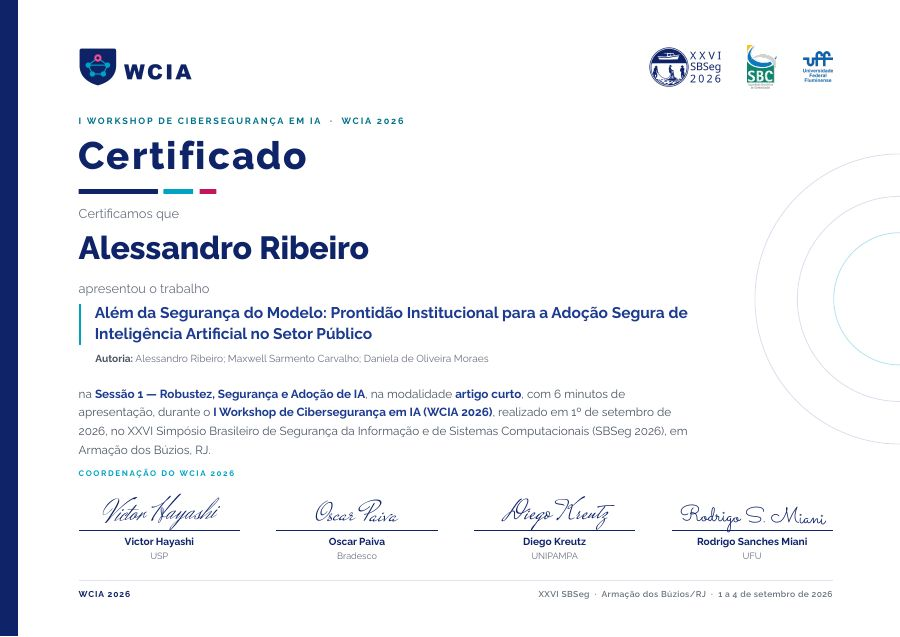
Além da Segurança do Modelo: Prontidão Institucional para a Adoção Segura de Inteligência Artificial no Setor Público
Alessandro Ribeiro
-
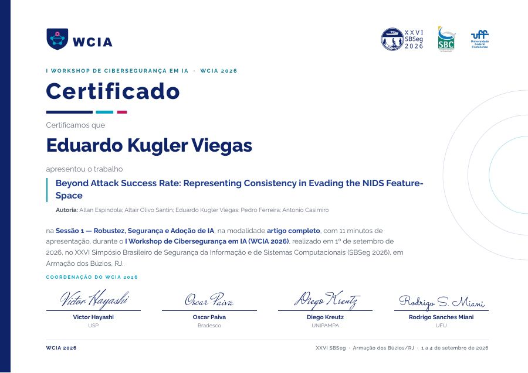
Beyond Attack Success Rate: Representing Consistency in Evading the NIDS Feature-Space
Eduardo Kugler Viegas
-
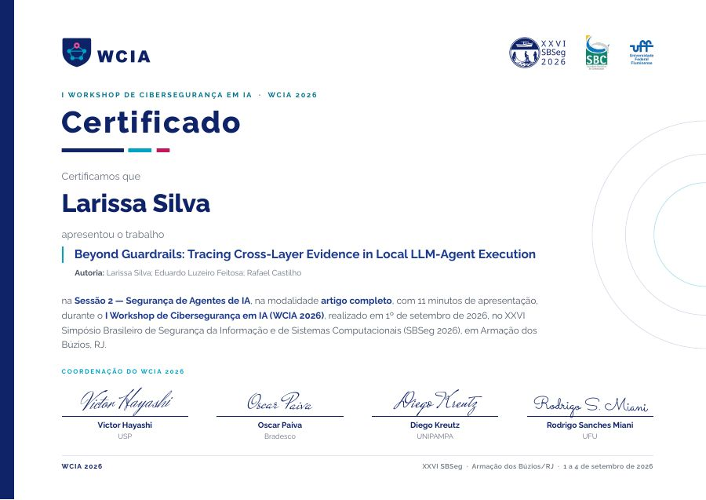
Beyond Guardrails: Tracing Cross-Layer Evidence in Local LLM-Agent Execution
Larissa Silva
-
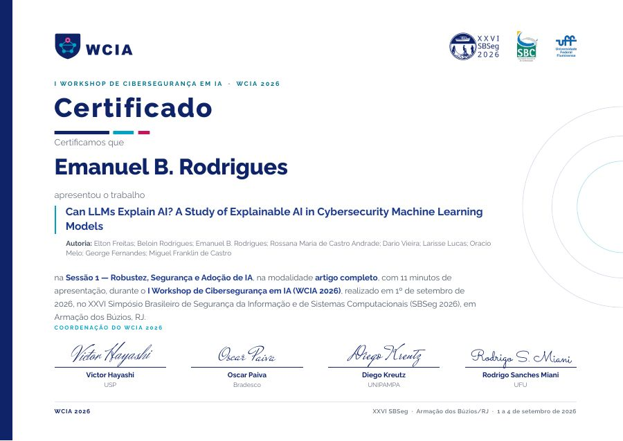
Can LLMs Explain AI? A Study of Explainable AI in Cybersecurity Machine Learning Models
Emanuel B. Rodrigues
-
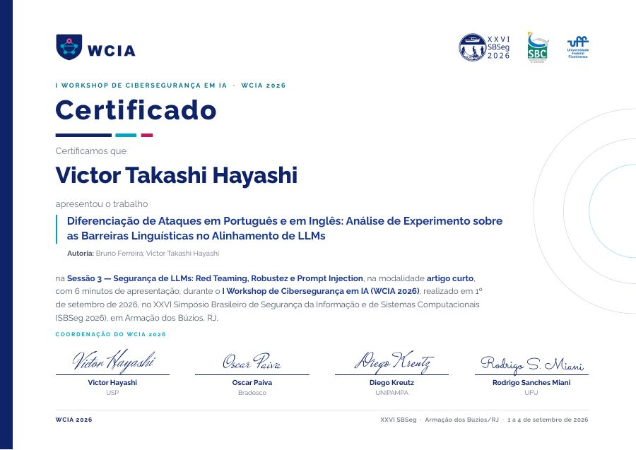
Diferenciação de Ataques em Português e em Inglês: Análise de Experimento sobre as Barreiras Linguísticas no Alinhamento de LLMs
Victor Takashi Hayashi
-
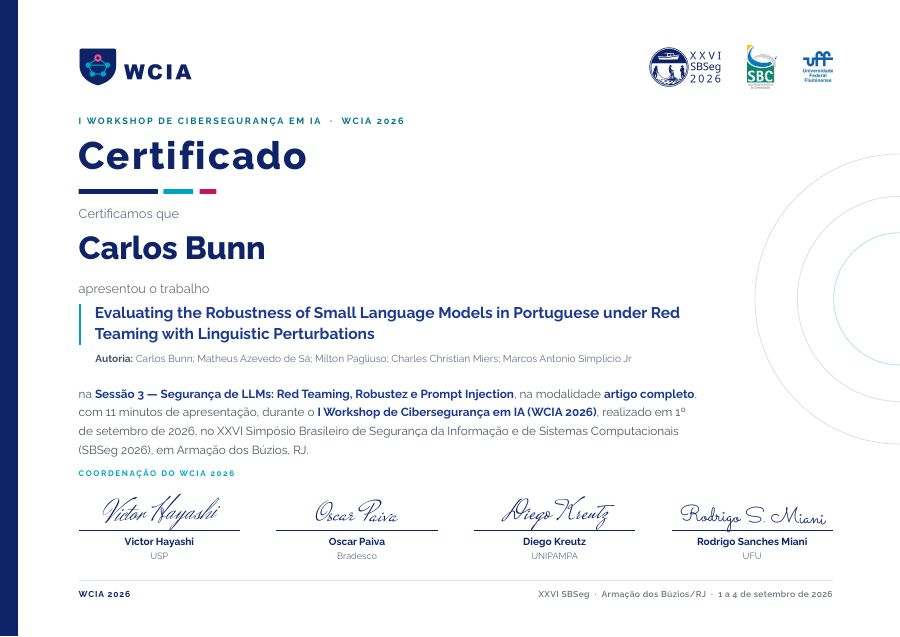
Evaluating the Robustness of Small Language Models in Portuguese under Red Teaming with Linguistic Perturbations
Carlos Bunn
-
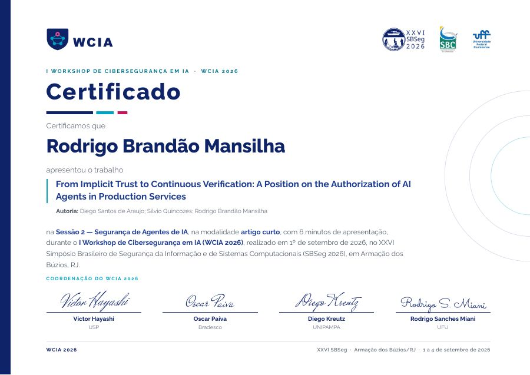
From Implicit Trust to Continuous Verification: A Position on the Authorization of AI Agents in Production Services
Rodrigo Brandão Mansilha
-
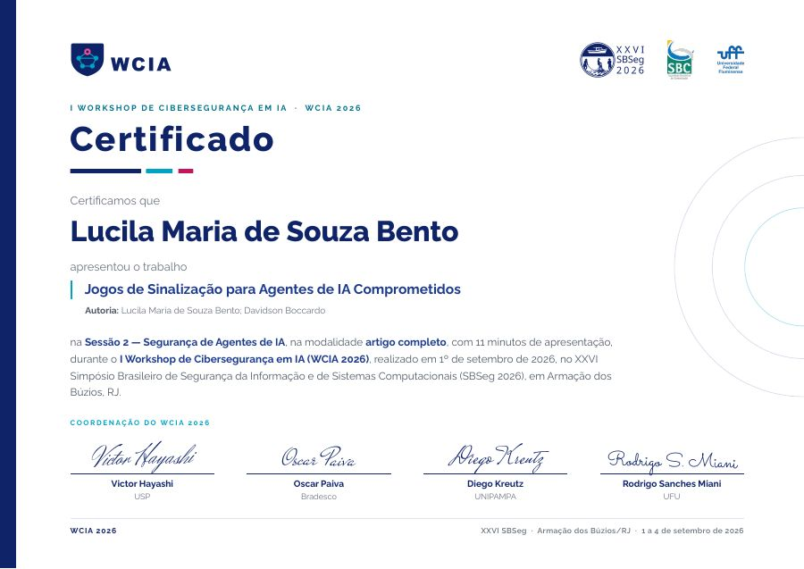
Jogos de Sinalização para Agentes de IA Comprometidos
Lucila Maria de Souza Bento
-
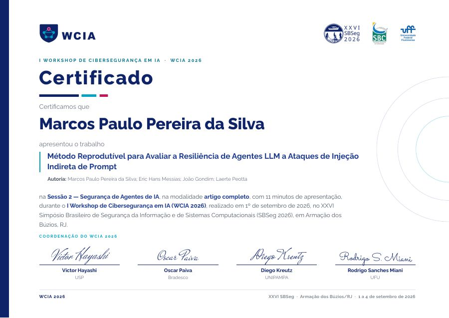
Método Reprodutível para Avaliar a Resiliência de Agentes LLM a Ataques de Injeção Indireta de Prompt
Marcos Paulo Pereira da Silva
-
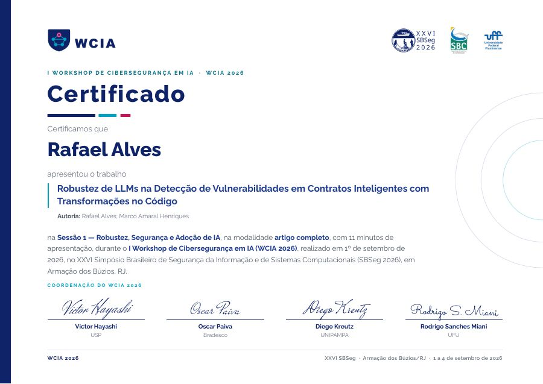
Robustez de LLMs na Detecção de Vulnerabilidades em Contratos Inteligentes com Transformações no Código
Rafael Alves
-
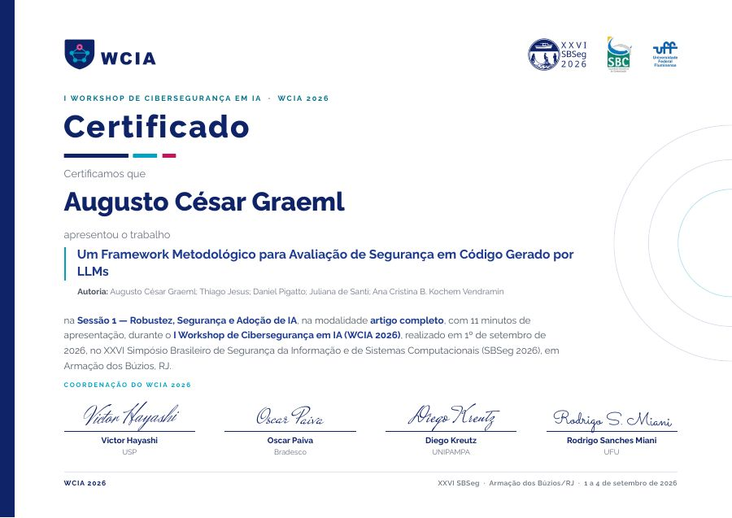
Um Framework Metodológico para Avaliação de Segurança em Código Gerado por LLMs
Augusto César Graeml
Nenhum certificado corresponde ao filtro.